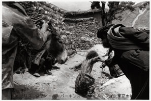
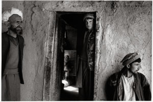
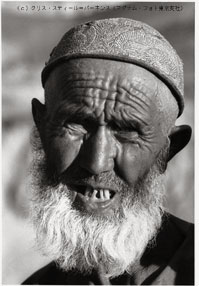
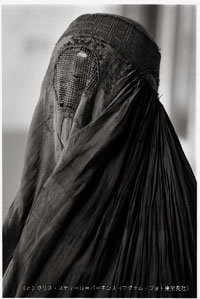

|
クリス・スティール＝パーキンスが1994年から数回にかけて撮影したアフガニスタンが一冊の写真集になった。毎日、大量に報道されるタリバン支配下とその後のアフガニスタン。テレビや新聞の報道からは見えてこない、もうひとつの姿がここにある。三島靖さんに、写真集『アフガニスタン』に向き合ってもらった。

「アフガニスタンは、さまざまな理由から、映像がない国である」
と、アフガニスタンを描いた劇映画『カンダハール』を日本でも公開するイランの映画監督、モフセン・マフバルマフは書いている(1)。
「第一に、アフガニスタンの人口の半分を占める女性は、顔を持たない」とマフバルマフはいう。イスラム教徒の女性たちは肌を人目にさらさないように身体を覆う衣装を身につけるが、タリバン支配下のアフガニスタンでは都市部でも風紀管理が厳しく、女性は「ブルカ」とよばれる、顔を完全に覆う衣装を着用することが義務づけられていた。
「国内でさえも、女性自身でさえも人口の半分を見ることができない国とは、映像のない国である」というわけだ。
「第二に、過去数年間、アフガニスタンにはテレビがなかった」。そして「第三に」、「図像や写真が一枚もない、文字だけで構成された二ページほどの白黒の出版物が二、三あるだけだった」。
タリバンの統治下では、絵や写真はとくに厳しく不法（ハラーム＝イスラムの教えに反する）とされてきたことは、よく知られている。この『写真集アフガニスタン』の撮影者、クリス・スティール＝パーキンスも、タリバン兵から「写真は撮るな」と制止された経験をもっている。
「人の写真はだめだし、ついでに動物もだめだ。写真はコーランの教えに反する、というが彼らの言い分である」
そこで「コーランが書かれた時代に、写真は発明されていなかったのではないか、と通訳を通して丁重に言ってみた」彼に返されたのは、「ばかかおまえは、というような目」だったというのだ。
それにしても、である。
現実的な範囲での多少のお目こぼしはあるにしても、写真がない国だったということがどういうことなのか、にわかには実感できない。タリバン支配下での事実上の指導者・オマル師の姿さえ、国民にはしかと分からないのである。
イメージのない存在を信奉する人びと、そして顔のない女性を妻にする男たち……映像に多くを頼って生活することが当然の社会にいる私たちにとって、「見えない」ことに対するもっとも自然な反応は恐怖であろう。タリバンによる占領以前にすでにアフガニスタンを撮影していた、クリス・スティール＝パーキンスのような写真家は別にして、いきなり「映像がない」国に接した多くの報道関係者たちの反応も、おそらくはそれに近いものだったと想像できる。その動機が社命だったにせよ個人的な正義感だったにせよ、「見えない」ことに直面した報道カメラマンたちの多くが、その状況をカメラで解放しようという十字軍的な義侠心にかられたことは、程度の多少は別として、間違いないだろう。

その結果、メディアを通じて何が「見えた」だろうか。それは、タリバンの撤退開始まではきわめて断片的で限られた、オサマ・ビンラディンの痕跡らしい映像の繰り返しであり、撤退後からはきわめて多くの、解放されたアフガニスタンの都市の光景であった。それらがアメリカの空爆を正当化するための意図された物語だとまではいわないが、音楽が流れ、テレビ番組が復活し、女性がブルカを脱いだという、その映像が「見える」ことが、アフガニスタンの本質的な解放とはなんの関係もないことは承知しておかねばならないだろう。この写真集にも１枚の暗示的な写真が入っているが、アフガニスタンはいぜん、世界最大のアヘン生産国である。にもかかわらず、世界の麻薬取引で発生する利益のほとんどすべては、アフガニスタンを素通りしていく。そして、世界の麻薬取引における最大の市場のひとつは、いうまでもなくアメリカなのである。
そこで、クリス・スティール＝パーキンスが作ったこの写真集をあらためて見てみることにしよう。
ロバート・キャパ、アンリ・カルティエ＝ブレッソン、ディヴィッド・シーモアという偉大な写真家によって結成されて以来、五十年以上にわたり世界最高の報道写真エージェントであり続けてきた「マグナム」に長く所属し、会長職についたこともあるクリス・スティール＝パーキンスは、紛争地のドキュメントをすぐれたモノクロ写真で伝えるという、マグナムの伝統を着実に受け継いでいるカメラマンのひとりである。その撮影経験相応の修羅場をくぐってきた写真家のひとりである、ということもいえるだろう。
だが、それにしてはこの写真集は地味だ。激しい戦闘シーンや悲惨な銃後の姿があるわけではない。初めのほうに、戦闘から逃げまどう人々のような激しい動きの写真があるが、巻末の写真説明を見ると、それが「薪を背負って暴れるロバから少女をよけさせようと飛び出す男」であることが分かる。また、すべてが暗めのモノクロ写真で、そういって差し支えなければ叙事詩めいた深みさえたたえている。別の写真につけられた解説「田舎の街道に面した茶店でひと休み」とは、いったい誰が何を休んでいるのだろうかと、写真に見入ってしまうほどだ(2)。かように、この写真集の写真ほとんどすべてが、急に世界の視線を集める表舞台へ投げ出されたアフガニスタンの「幕間」の姿であるかのように見える。「見えない」場所と撮影者とのゆき合いが、生活者たちが奏でるてんでばらばらなざわめきを、このあまり厚くはない本から豊かに響かせている。その響きは、イスラムの人たちが持つ、石に刻まれた碑文のような星霜にゆるがぬ詩の言葉を、連想させる。
このような写真には批判もありうるだろう。アフガニスタンに起きていることを報道する目的で撮影に行ったのならば、私たちに示されるべき写真は、もっと分かりやすく、説明的でなければならないのではないか、と。そういえば、撮影者の「足かけ５年にわたる４回のアフガニスタンへの旅」が、正確にはいつのことで、写真がどこでどう撮られたのかも、はっきりとは分からない。あるいは、そもそもモノクロの報道写真というスタイル自体、古びているのではないかとも考えられる。

撮影者は、こう書いている。
「わたしは何のためにアフガニスタンを旅し、この国で写真を撮っているのだろうか。人びとの生活状態を変えるためではなく、わたしの好奇心と放浪への衝動を満足させるためだ」と。そして「運がよければ、この薄っぺらな本は、記憶のわだちとして残る」のだとも。あえてそのようなことを書かずとも、カメラを持った十字軍であろうとすることがどれほどむなしいことか、マグナムの会長までつとめた彼には骨身にしみて分かっているはずだ。写真家集団マグナムは、五十年以上にわたり歴史に残る戦場写真を提供しつづけてきた。しかしその五十年間でいちども、戦争そのものをなくすことはできなかったのだ。ならば、私たちもこの本を、多くのテレビや新聞から見えてきた映像には見当たらなかった、無名の撮影者が残していった「記憶のわだち」として見つめ、私たちの側から読みといてみようではないか。
写真集の終わりのほうに、深い皺の刻まれた老人の写真と、ブルカをかぶった女性の写真が並べて置かれている。老人のほうは、地震でほとんどすべてを失っていながら、取材に訪れたクリス・スティール＝パーキンスに、家の残骸から掘り出したカーペットを与え、お茶とパンさえふるまってくれた人である。
家の前を通る旅人を歓待せよ。それはイスラムの人々が共通に持つ美徳のひとつだ。タリバン兵から写真撮影を制止されたとき、戦車を撮るふりをして兵士を盗み撮りしようかと考えたクリス・スティール＝パーキンスの前で、タリバン兵が「写真を撮れ」というようにポーズをとった。ほかの兵士たちがお茶を持ってきてくれた。ナンも、焼き肉も持ってきてくれて「食べろ食べろ」というのだ。そして彼が食べるまで誰も手を出そうとしなかったという。
初めて出会う旅人に、手放しの親切を与える人びと。その人たちがなぜかくも激しく争い続けているのか。その理由はこの写真集からは完全には読みとれない。しかし彼らの姿が「見えない」というただそれだけの理由で恐れる私たちの態度が、「無知」という恐るべき暴力でもあることを、この写真集は静かに教えてくれる。

(1) マフバルマフの著書『アフガニスタンの仏像は破壊されたのではない 恥辱のあまり崩れ落ちたのだ』（現代企画室）による。マフバルマフの映画『カンダハール』(2001年）は、１月12日から東京・新宿武蔵野館で公開。以後順次全国で公開される。
(2)この写真を見て私はすぐ、イランの映画監督アボルファズル・ジャリリが撮影した『少年と砂漠のカフェ』(2001年）を思い出した。アフガニスタンとイランの国境に近い街、デルバランの寄る辺ないカフェで働くアフガン人少年を主人公にしたこの作品は、マフバルマフの『カンダハール』をご覧になるならば、必ず合わせて観ることをおすすめする。マフバルマフの視線もまた、アフガニスタンのすべてではない。３月に東京・有楽町シネ・ラ・セットで公開。
|